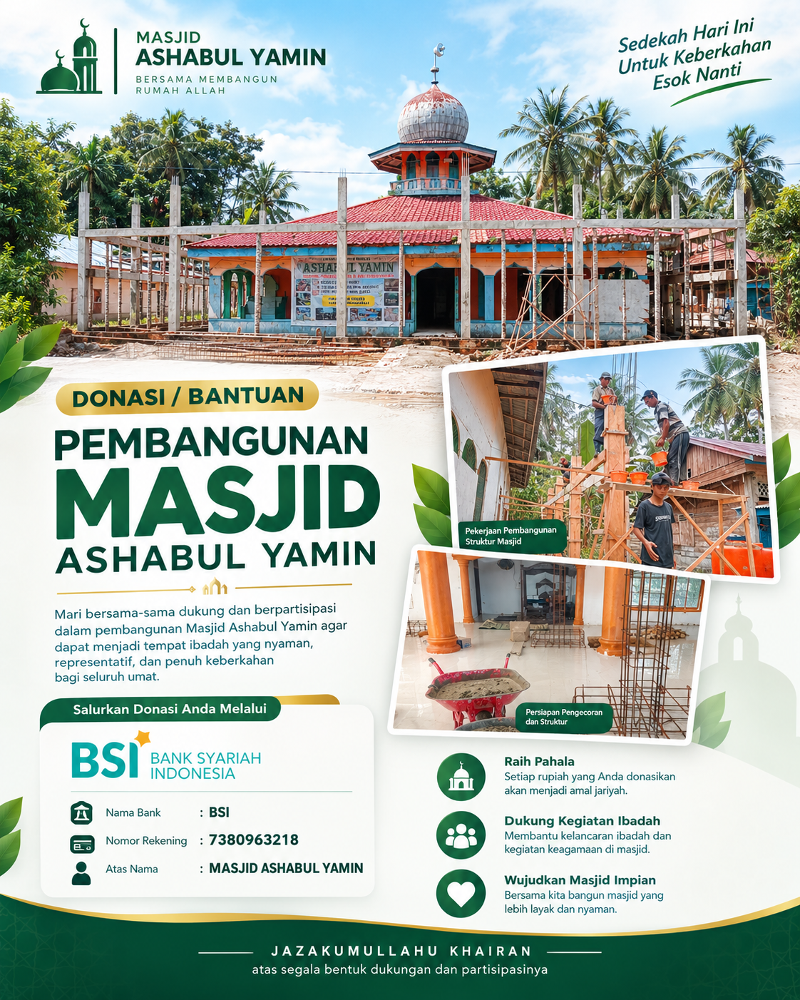

Bersama Membangun
Masjid Ashabul Yamin
Setiap kontribusi adalah bagian dari ikhtiar bersama untuk menghadirkan tempat ibadah yang lebih nyaman, representatif, dan penuh keberkahan bagi seluruh umat.

Bersama Mewujudkan Masjid yang Lebih Nyaman
Pembangunan masjid merupakan ikhtiar bersama. Melalui dukungan dan partisipasi masyarakat, kita berharap dapat melanjutkan pembangunan Masjid Ashabul Yamin agar semakin nyaman digunakan untuk beribadah dan kegiatan keagamaan.
Wujudkan Masjid Impian
Bersama kita bangun masjid yang lebih layak, representatif, dan nyaman untuk jamaah.
Dukung Kegiatan Ibadah
Membantu kelancaran ibadah, taklim, dan berbagai kegiatan keagamaan di lingkungan masjid.
Raih Pahala Jariyah
Setiap rupiah yang Anda donasikan insya Allah akan menjadi amal jariyah yang tak terputus.
Jadilah Bagian dari Kebaikan Ini
Bantuan Anda, sesuai kemampuan, menjadi bagian dari ikhtiar bersama dalam pembangunan Masjid Ashabul Yamin. Salurkan donasi terbaik Anda.
Bank Syariah Indonesia (BSI)
Transfer Bank secara Langsung
MASJID ASHABUL YAMIN
Silakan konfirmasi jika Anda sudah melakukan transfer. (08566256795)
Dokumentasi Pembangunan
Kondisi terkini proyek pembangunan Masjid Ashabul Yamin. Setiap progres adalah hasil dari doa dan dukungan para donatur.
Poster Kampanye Resmi
Gambar di atas memuat dokumentasi asli struktur, tampak depan, dan pengerjaan bagian dalam masjid.
Panduan Cara Berdonasi
Salin Nomor Rekening
Tekan tombol salin pada area rekening BSI di atas untuk menyalin nomor rekening dengan mudah.
Lakukan Transfer
Gunakan aplikasi Mobile Banking, Internet Banking, atau ATM Anda untuk melakukan transfer ke rekening tersebut.
Konfirmasi via WhatsApp
Simpan bukti transfer dan tekan tombol Konfirmasi via WhatsApp (08566256795) untuk pendataan oleh pengelola.
Transparansi Donasi
Kami berkomitmen untuk mengelola setiap rupiah bantuan yang diamanahkan secara bertanggung jawab penuh untuk kelancaran pembangunan Masjid Ashabul Yamin.
Laporan Sedang Disiapkan
Informasi laporan penggunaan dana dan perkembangan pembangunan yang terperinci akan ditampilkan di bagian ini setelah data tersedia dari pihak pengelola resmi.
Pertanyaan Umum
Hal-hal yang sering ditanyakan seputar donasi.